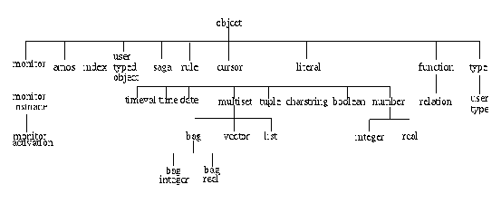
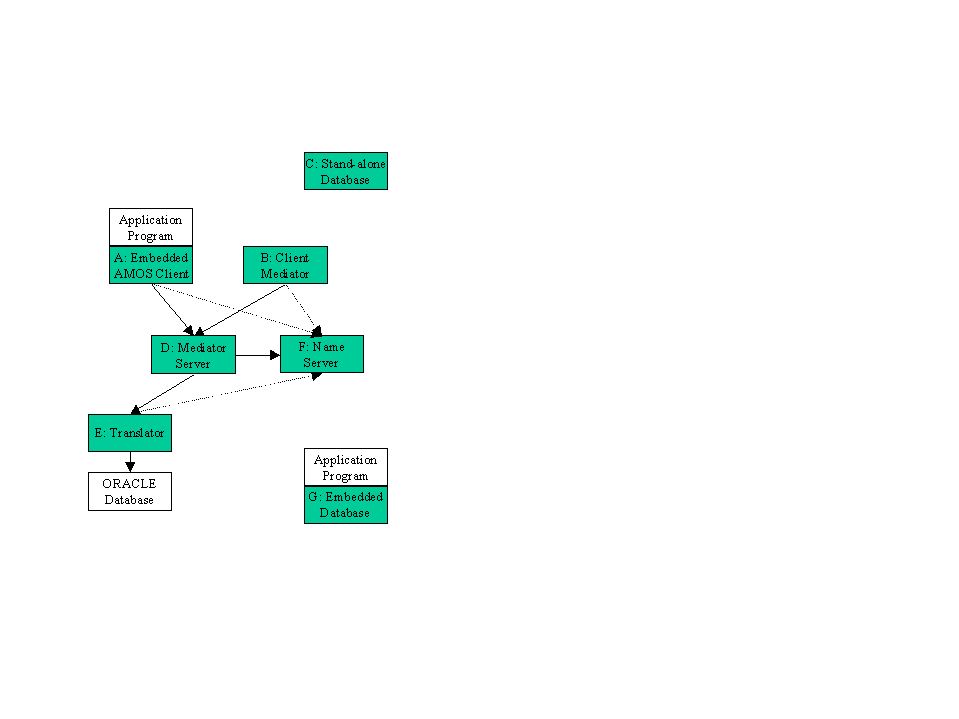

A ::= B C: A consists of B followed by C.
A ::= B | C, alternatively (B | C): A consists of B or C.
A ::= [B]: A consists of B or nothing.
A ::= B-list: A consists of one or more Bs.
A ::= B-commalist: A consists of one or more Bs separated by commas.
'xxx': The string (keyword) xxx.
AMOSQL statements are always terminated by a semicolon (;).
identifier ::=
('_' | letter) [identifier-character-list]
identifier-character ::=
alphanumeric | '_'
AMOS II keywords are case sensitive; they are always
written with lower case letters. AMOS II identifiers are NOT case
sensitive; i.e. they are always internally capitalized.
Syntax:
variable-name ::= identifier
Syntax:
interface-variable-name ::= ':' identifier
gen-variable-name ::= variable-name | interface-variable-name
constant ::= integer-constant | real-constant | boolean-constant | string-constant integer-constant ::= ['-'] digit-list real-constant ::= ['-'] digit-list '.' [digit-list] boolean-constant ::= 'true' | 'false' string-constant ::= string-separator character-list string-separator string-separator ::= ''' | '"'In string-constants the surrounding string separators must be the same. If the string contains the separator used, it must be preceded with the escape character backslash, '\'.
comment ::= '/*' character-list '*/'
type-name ::= identifierThe 'create type' statement creates a new user type. It also provides the option to create property functions. Property functions are represented as regular AMOSQL functions of a single argument. They can also be defined separately with 'create function' statements (``Functions and Queries'' ).
create-type-stmt ::=
'create type' type-name ['subtype of' type-name-commalist]
['properties' '(' attr-function-commalist ')']
attr-function ::= function-name type-name ['key']For example:
create type namedobject properties (name charstring key); create type person subtype of namedobject properties (age integer,parents bag of person); create type student subtype of person properties (score integer);Type names must be unique across all types.
The new type will be an immediate subtype of all the supertypes specified in the 'subtype of' clause. The supertypes must be defined. If no supertypes are specified the new type becomes an immediate subtype of the system type usertypeobject.
The attr-function-commalist clause is optional, and provides a way to create property functions for the new type. The property functions always have a single argument and a single result and are initially only stored (but can be later redefined as a derived function, ``Functions and Queries'' ). The argument type is implicitly the type being created and the result type is specified by the type-name. The result types must exist.
If 'key' is specified for a property, it indicates that each value of the property is unique, see ``Functions and Queries'' .
AMOS BAG OF x BOOLEAN CHARSTRING COLLECTION FUNCTION INTEGER LITERAL NUMBER OBJECT PROXY REAL SAGA TYPE USERTYPE USERTYPEOBJECT VECTOR``AMOS II type hierarchy'' shows the upper levels of the type hierarchy of AMOS II (PICTURE NEEDS TO BE MODIFIED).

AMOS type hierarchydelete-type-stmt ::= 'delete type' type-nameFor example:
delete type person; /* Delete types person and student */Functions using the deleted type will be deleted as well (``Functions and Queries'' ).
Objects that were instances of the deleted type will no longer be instances of that type, but they remain instances of their other types. All user objects are instances of USERTYPEOBJECT, so deleting a type cannot causes objects to be left without any type.
create-object-stmt ::=
'create' type-name
['(' function-name-commalist ')'] 'instances' initializer-commalist
initializer ::=
gen-variable-name |
[gen-variable-name] '(' value-list-item-commalist ')'
value-list-item ::=
simple-init-value | multiple-init-value | 'nil'
simple-init-value ::=
single-value | collection-value
single-value ::=
gen-variable-name | constant
collection-value ::=
bag-value | vector-value
bag-value ::=
'bag(' single-value-commalist ')'
vector-value ::=
'vector(' single-value-commalist ')' |
'{' single-value-commalist '}'
multiple-init-value ::=
'<' simple-value-commalist '>'
Example:
create person (name,age) instances
:adam ('Adam',26),:eve ('Eve',32);
create person instances :olof;
create person (parents) instances
:tore (bag(:adam,:eve));
The new objects are assigned initial values for the
specified property functions. The property functions can be any updatable
AMOSQL functions.
One object will be created for each initializer. Each initializer can have an optional variable name which will be bound to the new object. The variable name can subsequently be used as a reference to the object.
The initializer also contains a comma-separated list of initial values for the specified functions. Initial values are specified as constants or variables.
The types of the initial values must match the declared result types of the corresponding functions.
Multiple result functions are initialized with a comma-separated list of values enclosed in angle brackets (syntax multiple-init-value).
Bag valued functions are initialized using the keyword BAG (syntax bag-value).
Vector result functions are initialized with a comma-separated list of values enclosed in curly brackets (syntax vector-value).
It is possible to specify NIL for a value when no initialization is desired for the corresponding function.
delete-object-stmt ::= 'delete' gen-variable-nameExample:
delete :adam;Referential integrity is maintained by the system which will automatically delete references to the deleted object. It is thus also removed from all stored functions where it is referenced.
Deleted objects are printed as
#[OID 1234 *DELETED*]The objects may be undeleted by rollback. The garbage collector physically removes the OIDs from the database only when their creation has been rolled back or their deletion committed, and they are not references from some variable.
create-function-stmt ::=
'create function' function-name argl-spec
-> resl-spec [fn-implementation]
function-name ::=specific-function-name |
type-name-list '.' specific-function-name '->' type-name-list
type-name-list ::= type-name | type-name '.' type-name-list
specific-function-name ::= identifier
argl-spec ::='(' [arg-spec-commalist] ')'
arg-spec ::=simple-arg-spec | 'bag of' simple-arg-spec
simple-arg-spec ::= type-name [variable-name] ('key' | 'nonkey')
resl-spec ::= arg-spec | multiple-result-spec
multiple-result-spec ::= ['<'] simple-arg-spec-commalist ['>']
fn-implementation ::= 'as' (derived-body | procedure-body |
foreign-body | 'stored')
derived-body ::= simple-select-stmt
foreign-body ::= 'foreign' [string-constant]
The fn-implementation specifies what the function
does when it is invoked. The following kinds of function implementations
are supported:
create function age(person)->integer as stored; create function income(person)->integer as stored; create function richlimit()->integer as stored;As the function richlimit illustrates that an AMOSQL function may have zero arguments.
create function double_income (person p)->integer as select income(p) + income(p); create function rich(person p)->boolean as select true where income(p) > richlimit(); create function married(person h,person w) -> boolean as stored; create function wife(person h)->person w as select w where married(h,w); create function family_incomes(person p) -> <integer h,integer w> as select income(p),income(wife(p)); create function family_totalincome(person p)->integer t as select hi + wi from integer hi,integer wi where <hi,wi> = family_incomes(p);The function wife is an example of a derived function calling a boolean function married.
function-call ::=
function-name '(' [parameter-value-commalist] ')'
parameter-value ::=
function-call | single-value | '(' simple-select-stmt ')'
simple-select-stmt ::=
'select' expr-commalist
[for-each-clause] [where-clause]
expr ::=
function-call | single-value
For example:
age(:eve);The above function call is equivalent to the ad hoc query:
select age(:eve);The query optimizer is not invoked for such simple calls to AMOS II functions and the invocation is very fast. The reason is that the query optimizer is instead applied when a derived function is defined, and the function is optimized for such unnested calls to the function.
Function calls can also be nested, for example:
age(parents(:eve));or equivalently:
select age(parents(:eve));For nested function calls the query optimizer will be applied to produce an execution plan for the call, which is then immediately executed. Thus nested function calls are therefore significantly slower than unnested ones, and the user is recommended to avoid nested function calls by defining suitable derived functions. In the example above, define:
create function parage(person p) -> integer as select age(parents(p)); /* Optimizer invoked here and execution plan saved in db */ parage(:eve); /* Optimizer NOT invoked here */Daplex semantics is used for nested function calls. This means that if a function is applied on an inner function which is bag valued (such as parents) the outer function (i.e.age) is applied on each elements of the bag. In the example above, the result of the query parage(:adam); is a bag of the ages of all parents of :adam.
The Daplex semantics is NOT used for aggregation operators (See ``Subqueries and Aggregation Operators'' ) which are functions that aggregate over the bag. For example, to count how many parent :adam has, the aggregation operator count can be used which counts the elements of its argument bag:
count(parents(:eve));The built-in functions +,-,*,/ have equivalent infix syntax with the usual priorities.
(income(:eve) + income(:ulla)) * 0.5;is equivalent to:
times(plus(income(:eve),income(:ulla)),0.5);
create function name(person key) -> charstring key as stored;indicates that there is only one name for each person and that the names of persons are unique.
Update would violate upper object participation (updating function ...)The keyword 'nonkey' specifies that the parameter has no cardinality constraint.
The function name could thus also have been written:
create function name(person) -> charstring key as stored;For foreign functions it is up to the implementor to guarantee that specified cardinality constraints hold.
create function married(person husband,person wife key)->boolean as stored;Polygamous marriages are refused to be stored by the function married, since the first argument has the default cardinality constraint 'key'.
The 'bag of' declaration on the result of a stored function actually just overrides the default 'key' declaration of its argument with 'nonkey'. Thus the function parents above could also have been written:
create function parents(person nonkey) -> person as stored;
delete-function-stmt ::= 'delete function' function-nameFor example:
delete function married;Deleting a type also deletes all subtypes and all functions using the deleted types.
delete type namedobject; /* Wipes out all functions and types defined so far */
query-stmt ::= select-stmt | function-call select-stmt ::= 'select' ['distinct'] expr-commalist [into-clause] [from-clause] [where-clause] into-clause ::= 'into' gen-variable-name-commalist from-clause ::= 'from' variable-declaration-commalist variable-declaration ::= type-name variable-name | 'bag of' type-name variable-name where-clause ::= 'where' predicate-expressionFor example:
select age(p) from person p where name(p) = 'Eve';selects the age of the person named Eve.
select name(q) from person p, person q where name(p) = 'Eve' and age(q) > age(p);selects the names of all persons older than Eve.
Function calls (``Function Calls'' ) is the simplest form of queries.
The expr-commalist defines the object(s) to be retrieved. See ``Predicate expressions'' for definition of function-call.
The from-clause declares types of local variables used in the query.
The where-clause gives a selection criteria for the search. The details of the where clause is described below in ``Predicate expressions'' .
The result of a select statement is a single result tuple of objects or a bag of single result tuples. Duplicates may occur, unless suppressed using the keyword 'distinct'.
An into-clause is available for specifying
variables to be bound to the result. In case more than one result tuple
is returned, the variables will be bound only to the elements of the first
encountered tuple.
For example:
select p into :eve2 from person p where name(p) = 'Eve'; name(:eve2);This query retrieves into the environment variable :eve2 the person whose name is 'Eve'.
predicate-expression ::=
predicate-expression 'and' predicate-expression |
predicate-expression 'or' predicate-expression |
'(' predicate-expression ')' |
simple-predicate
simple-predicate ::=
function-call |
simple-relterm relop simple-relterm |
relterm '=' relterm simple-relterm ::= function-call | single-value
relterm ::=
simple-relterm | mutiple-value | select-statement multiple-value ::= '<' single-value-commalist '>' relop ::= < | > | <= | >= | !=In a function call, the types of the actual parameters and results must be the same as, or subtypes of, the types of the corresponding formal parameters or results.
Resolution of overloaded functions is described in``Overloaded Functions and Late Binding'' .
Query variables can be bound to bags. The treatment of bag variables and aggregation operators is described in ``Subqueries and Aggregation Operators'' .
The comparison operators (=, !=, <, <=, > and >=) are treated as binary boolean functions. They are all defined for any object type.
For example, assume the two following AMOS II function definitions:
create function less(number i, number j)->boolean as select true where i < j; create function less(charstring s,charstring t)->boolean as select true where s < t;Its resolvents will have the signatures:
less(number,number) -> boolean less(charstring,charstring) -> booleanInternally the system stores the resolvents under different function names. The name of a resolvent is obtained by concatenating the type of its arguments with the name of the overloaded function followed by the symbol '->' and the type of the result.(syntax in ``Functions and Queries'' ). The two resolvents above will be given the names number.number.less->boolean and charstring.charstring.less->boolean.
Overloaded function resolvents are allowed to differ on their argument types and the result types. The query compiler resolves the correct resolvent to apply. If there is an ambiguity, i.e. several resolvents qualify, or if no resolvent qualify an error will be generated by the query compiler.
When overloaded function names are encountered
in AMOSQL function bodies, the system will try to use local variable declarations
to choose the correct resolvent (early binding).
For example:
create function younger(person p,person q)->boolean as select less(age(p),age(q));will choose the resolvent number.number.less->boolean, since age returns integers and the resolvent number.number.less->boolean is applicable to integers by inheritance. The other function resolvent charstring.charstring.less->boolean does not qualify since it is not legal to apply to arguments of type integer.
On the other hand, this function:
create function nameordered(person p,person q)->boolean as select less(name(p),name(q));will choose the resolvent charstring.charstring.less->boolean. In both cases the resolution will be done at compile time.
Dynamic type resolution is also done for top level function call to choose the correct resolvent. For example,
less(1,2);will choose number.number.less->boolean
To avoid the overhead of dynamic type resolution one may use the 'dot notation':
number.number.less->boolean(1,2);AMOS II supports also late binding of overloaded functions where the overload resolution is done at run time instead of at compile time. For example, suppose that managers are employees whose incomes are the sum of the income as a regular employee plus some manager bonus:
create type employee subtype of person; create type manager subtype of employee; create function mgrbonus(manager)->integer as stored; create function income(employee)->integer as stored; create function income(manager m)->integer i as select employee.income->integer(m) + mgrbonus(m);Now, suppose that we need a function that returns the gross incomes of all persons in the database, i.e. we use manager.income->integer for managers and employee.income->integer for non-manager. In AMOS II such a function is defined as:
create function grossincomes()-> integer i as select income(p) from employee p; /* income(p) late bound */Since income is overloaded with resolvents employee.income->integer and manager.income->integer and both qualify to apply to employees, the resolution of income(p) will be done at run time. If only incomes of employees are sought the desired resolvent has to be explicitly specified as employee.income->integer.
We currently have the restriction on late bound functions that they can only be used in the forward direction, i.e. in queries where their arguments are known but not their results.
Since the detection of the necessity of dynamic resolution is done at compile time, overloading a function name may lead to a cascading recompilation of functions defined in terms of that function name. This may take some time. For a more detailed and extensive presentation of the managemant of late bound functions see [2][3].
create function father(person) -> person as stored; create function mother(person) -> person as stored; create function parent(person p) -> person q as select q where q=father(p) or q=mother(p);The function body of parent is a disjunctive query, since it contains an 'or'. parent would generate the bag of all fathers and mothers for a given person.
age(parents(:eve));will return the ages of all parents of :adam, i.e. the function age is applied on each element of the result from the function call parents(:adam).
By contrast, an aggregation operator is a function that treats a bag valued argument as a single unit. Thus the complete bag is passed at once to the outer function, rather than applying the outer function on each result of the bag. For example, count(bag of object) is an example of an aggregation operator:
count(parents(:eve));In this case the number of parents of :adam is returned.
Aggregation operators are defined as functions where one or several arguments are declared as bags:
bag of type xThe following system aggregation operators are defined:
sum(bag of number x) -> number r count(bag of object x) -> integer r maxagg(bag of object x) -> object r minagg(bag of object x) -> object rAggregation operators can be overloaded. Notice that count, maxagg and minagg can be applied to any bag, while sum must be applied only to 'uniform' bags of numbers.
NOTICE: Nested subqueries are allowed as arguments to aggregation functions. For example, totalincomes could also be written:
create function totalincomes()->integer as select sum(select i from person p,integer i where income(p)=i); /* income will be bound at runtime */Subqueries always return bags as their result; thus the result of a subquery must be passed to only aggregation operators.
Local variables in queries may be declared as bags. For example totalincomes could also have been written:
create function totalincomes()->integer as select sum(b) from bag of integer b where b = (select i from person p,integer i where income(p)=i); /* Late binding on income*/
notany(bag of object x) -> Boolean some(bag of object x)-> BooleanFor example, the function butlowestincomes(d) returns all incomes that is more than d higher than the lowest income:
create function butlowestincomes(integer d)->integer i as select i from integer i,person p where some(select from person q where (income(q) + d) < i)/* Late */ and i = person.income->integer(p);some corresponds to the logical quantifier exists.
Contrast this to the complementary function lowestincomes that computes all incomes within the distance d from the lowest of all incomes:
create function lowestincomes(integer d)->integer i as select i from integer i,person p where notany(select from person q where (income(q) + d)<i)/* Late */ and i = person.income->integer(p);notany corresponds to the logical quantifier not exists, i.e. it negates subqueries.
The recommended way to compute transitive closures in AMOS II is to use the built-in function tclose:
tclose(function f,object o,integer maxdepth)-> <object r,integer depth>Starting with object o it constructs the transitive closure by successively applying f(o), f(f(o)) etc. down to level maxdepth. tclose returns the objects, r, in the closure and their distance, d, from o. f must be function with a single argument and result.
tclose is overloaded so that, as an alternative, the name of the traversal function can be specified as a string.
create function ancestors(person o)-> bag of person a
as select a from integer d
where tclose("person.parents->person",o,200) = <a,d>
and a != o;
The tclose function is invertible if the traversal
function is invertible. This means that the direction of the transitive
closure can be inverted. Thus both these queries are legal:
ancestors(:kain); select p from person p where ancestors(p) = :eve;The first query (function call) returns all ancestors of :kain while the other query returns all descendants of :eve .
An alternative definition of ancestor is as a recursive function (see next section). However, it is strongly recommended to use tclose as an alternative to recursion whenever possible, since this is more efficient. Studies have shown that transitive closures account for a large majority of the needs for recursive queries. Since tclose is invertible in our case, it will be almost as powerful as the recursive definition.
open-cursor-stmt ::= 'open' cursor-name 'for' query-stmt cursor-name ::= gen-variable-name fetch-cursor-stmt ::= 'fetch' cursor-name (into-clause | next-clause) next-clause ::= 'next' integer-constant close-cursor-stmt ::= 'close' cursor-nameFor example:
create person (name,age) instances :Viola ('Viola',38);
open :c1 for select p from person p where name(p) = 'Viola';
fetch :c1 into :Viola1;
close :c1;
name(:Viola1);
"Viola";
A cursor is created by the open-cursor-stmt
and is represented by a bag of result tuples containing objects with unknown
types.
The result of the query is always materialized and stored in the cursor bag.
The fetch-cursor-stmt fetches the first result tuple from the cursor; i.e. the tuple is removed from the front of the cursor bag. NIL is returned if there are no more result tuples left in the cursor.
If present in a fetch-cursor-stmt, the into clause will bind elements of the first result tuple to AMOSQL interface variables. There must be one interface variable for each element in the result tuple.
If present in a fetch-cursor-stmt, the next-clause will display the specified number of result tuples and remove them from the cursor bag.
If neither a next nor an into clause is present in a fetch-cursor-stmt, a single result tuple is fetched and displayed.
The close-cursor-stmt emties the cursor.
It is sometimes useful to count the number of result tuples in a cursor bag:
create function ageofpersonnamed(charstring nm)-> integer a
as select age(p) from person p where name(p)=nm;
open :c1 for select ageofpersonnamed('Eve');
count(:c1);
1
create function ancestors(person p)->person a as select a from person q where (a = ancestors(q) and q = parent(p)) or a = parent(p);Recursive queries are evaluated top-down. The system only handles recursive functions that call themselves recursively in the 'forward' direction (where all arguments are known). Otherwise, the system will complain that the query is not executable ('unsafe'). Left recursive functions, as ancestor, are re-ordered by the optimizer to become right-recursive (in order to avoid internal looping). NOTICE that the top-down evaluation may still cause indefinite looping in case there are circularities in the data.
NOTICE: Because of the above problems it is recommended to use the transitive closure function (see ``Transitive Closures'' ) as an alternative to recursion whenever possible. Extra care should be taken when defining overloaded recursive function as the possibility of infinite loops exists.
update-stmt ::=
update-op update-item [for-each-clause] [where-clause]
update-op ::=
'set' | 'add' | 'remove'
update-item ::=
function-name '(' single-value-commalist ')' '=' res-values
Not every function is updatable. AMOS II defines a
function f to be updatable if it is a stored function, or if it is derived
from a single updatable function g in such a way that the argument and
result parameters of f partition all the arguments and results of g and
such that no selection is involved in the derivation.
set age(:adam)=33;
set age(p)= q from person p, integer q where q = 1 + age(p);will iterate over all persons and increment their ages.
A boolean function can be set to either 'true'
or'false'. Setting the value of a boolean function to 'false' means that
the truth value is removed from the function.
add-type-stmt ::=
'add type' type-name ['(' [function-name-commalist] ')']
'to' new-instances
The updated objects may be assigned initial values
for all the specified property functions in the same manner as in the create
object statement.
The remove-type-stmt makes one or more objects no longer belong to the specified type.
remove-type-stmt ::= 'remove type' type-name 'from' variable-name-commalistReferential integrity is maintained so that all references to the objects as instances of the specified type cease to exist.
An object will always be an instance of some type. If all user defined types have been removed, the object will still be member of USERTYPEOBJECT.
procedure-body ::= block | create-type-stmt | create-object-stmt | create-function-stmt | create-index-stmt | delete-type-stmt | delete-object-stmt | delete-function-stmt | delete-index-stmt | for-each-stmt | update-stmt | set-variable-stmt | fetch-cursor-stmt | open-cursor-stmt | close-cursor-stmt | select-stmt | if-stmt | result-stmt | quit-stmt block ::= 'begin' procedure-body-semicolonlist 'end' | 'begin' 'declare' variable-declaration-commalist ';' procedure-body-semicolonlist 'end' result-stmt ::= 'result' expr for-each-stmt ::= 'for each' ['distinct'] variable-declaration-commalist [where-clause] procedure-body if-stmt ::= 'if' predicate-expression 'then' procedure-body ['else' procedure-body] set-variable-stmt ::= 'set' gen-variable-name '=' exprExamples:
create function creperson(charstring nm,integer inc) -> person p as begin create person instances p; set name(p)=nm; set income(p)=inc; result p; end;
set :p = creperson('Karl',3500);
create function makestudent(object o,integer sc) -> boolean
as add type student(score) to o (sc);
makestudent(:p,30);
create function flatten_incomes(integer threshold) -> boolean
as for each person p where income(p) > threshold
set income(p) = income(p) -
((income(p) - threshold) / 2);
flatten_incomes(1000);
Procedures are compiled at creation time.
Procedures may return (bags of) results. The result-stmt is used for this, where expr is returned as the result from the procedure.
The for-each-stmt construct can be used to iterate over the result of a query. For example the following function adds inc to the incomes of all persons with salaries higher than limit and returns their old incomes:
create function increase_incomes(integer inc,integer limit) -> integer oldinc as for each person p, integer i where i > limit and i = income(p) begin result i; set income(p) = i + inc end;NOTICE: The semicolon can be omitted after last statement in a block.
NOTICE: result-stmt does not not change the control flow (different from, e.g., return in C), but it only specifies that a value is to be added to the result bag of the function and then the procedure evaluation is continued as usual. The for-each-stmt does not return any value at all unless result-stmt is used within its body.
NOTICE: Queries and updates embedded in procedure
bodies are optimized at compile time. The compiler saves the optimized
query plans in the database so that dynamic query optimization is not needed
when procedures are executed.

The rest of this subsection describes how to set up an AMOS II system as a mediator server, and how to connect a client mediator to an AMOS II server.
When you run amos2.exe you initially will have a stand-alone AMOS II database which cannot communicate with other AMOS II databases or mediators. The stand-alone AMOS II database can become a mediator server or a client mediator by issuing some AMOSQL system function calls, to be described next.
Every mediator must have a name registered with a nameserver and the nameserver is also its own nameserver. So the first thing to do when setting up a group of AMOS II mediators on the net is to start nameserver, as follows:
1. Start a stand-alone AMOS II database.
2. Call the AMOSQL function
nameserver("<server name>");
for example
nameserver("MyServer");
This call will register the stand-alone AMOS II database as a mediator
server named <server name> in the nameserver, i.e. in itself.
3. Start running the nameserver by calling
listen();
After this call the system will no longer prompt for AMOSQL commands
but will start listening for inter-database requests from other AMOS II
systems.
You can interrupt the listening loop by typing CTRL-C. After that the server is not active and you can type AMOSQL commands as usual. Resume the server listening loop again by calling listen();.
An unnamed AMOS II system is not a mediator but can be a stand-alone (C) or an embedded stand-alone (G) database. It can also be an embedded AMOS II system (A) through which an application communicates with mediator servers. Before an AMOS II database has become a named client mediator it is NOT allowed to import or integrate data from mediators to store in the local database.
Once a mediator client is registered it may send multi-database requests
to the mediator servers registered in its name server. The most primitive
way to communicate with mediator servers is through the system function
ship("<mediator server>","<AMOSQL command>");
For example
ship("MyServer","select t from type t;");
It executes an AMOSQL command in a mediator server and ships the result
back to the issuing mediator. Section 10.2 describes sophisticated multi-database
query facilities in AMOS II through which data can be retrieved and combined
from several mediator servers.
name(amos a)-> charstring
returns the name of a mediator.
amos_servers()-> bag of amos
returns the AMOS II mediator servers (excludes client mediators)
currently registered in the nameserver.
amos_server_ids()-> bag of charstring
returns the names of the currently registered mediator servers.
this_amosid()->charstring
returns the name of the local mediator server or client mediator where
this_amosid is called. The string "NIL" is returned if
the current AMOS II system is a stand-alone database.
Sagas are created by the following function calls:
set :s = create_saga();or
set s = create_sub_saga();(only to be used within another saga)
The syntax for executing something in a saga is as follows:
saga-stmt ::='saga' saga procedure-body
'compensation' procedure-body
Sagas are commited (and deleted) by:
commit_saga(:s);and are aborted (and deleted) by
abort_saga(:s);During abortion of a saga all the compensations are executed until the beginning or until stopped by a call to
stop_compensation();Sagas can be passed to procedures to be executed in the body of the procedure. Note that any local variables defined outside the saga statement will have the values in the compensation that they had at the end of execution of the forward transaction of the associated saga statement. If such variables are changed after the saga statement is executed this will not be seen in the compensation. To support such behaviour it is possible to associate data with a saga through functions that are indexed with the current saga (can be accessed by current_saga()).
For example, in the following function there can be only one name per person:
create function name(person)->charstring as stored;By contrast, names allow more than one name per person:
create function names(person p nonkey)->charstring nm as stored;Alternatively
create function names(person p)->bag of charstring nm as stored;Any argument or result declaration can be suffixed with the keyword 'key' to indicate the position of a unique index. For example, the following definition prohibits two persons to have the same name:
delete function person.name->charstring; /* Remove old name function */
create function name(person p)->charstring nm key as stored;Named non-unique indexes can be created on any arguments or results with the statement:
create-index-stmt ::=
'create index' index-name 'on' index-spec-commalist ;
index-spec ::=
function-name '(' argres-name ')'
For example:
create index i1 on person.name->charstring(nm), names(charstring);creates two indexes on the result of name and of names, respectively.
Notice that one may use either the name of the type of an argument or the result to specify the index position when unique, as in the example.
delete-index-stmt ::= 'delete index' index-name ;For example, to delete the two indexes above do:
delete index i1;There always has to be at least one index left on each stored function. Thus delete index is a dummy operation if one tries to delete the last remaining index.
To save space it is sometimes possible to delete the default index on the first argument of a stored function. For example, suppose we store a table mapping parts to identifiers with an index on the identifier:
create type part; create function partid(part p)->integer id key as stored;partid will have two indexes, one on p and one on id. To drop the index on p, do the following:
create index dummy on partid(p); delete index dummy;
For example, to cluster the properties name and address of persons one can define:
delete function person.name->charstring; create function personprops(person p) -> <charstring name,charstring address> as stored; create function name(person p) -> charstring nm as select nm from charstring a where personprops(p) = <nm,a>; create function address(person p) -> charstring a as select a from charstring nm where personprops(p) = <nm,a>;Clustering does not improve the execution time performance significantly in a main-memory DBMS such as AMOS II. However, clustering can decrease the database size considerably.
=(object x, object y) -> boolean (infix operator =) !=(object x, object y) -> boolean (infix operator !=) >(object x, object y) -> boolean (infix operator >) >=(object x,object y) -> boolean (infix operator >=) <(object x, object y) -> boolean (infix operator <) <=(object x,object y) -> boolean (infix operator <=)All objects can be compared. Strings are compared by characters, lists by elements, OIDs by identifier numbers. Equality between a bag and another object denotes set membership of that object. The comparison functions can, of course, be overloaded for user defined types.
abs(number x) -> number y div(number x, number y) -> number z (infix operator /) max(object x, object y) -> object z min(object x, object y) -> object z minus(number x, number y) -> number z (infix operator -) mod(integer x, integer y) -> integer z plus(number x, number y) -> number z (infix operator +) times(number x, number y) -> number z (infix operator *) iota(integer l, integer u)-> bag of integer z sin(number x) -> number z cos(number x) -> number z tan(number x) -> number z ln(number x) -> number z sqrt(number x) -> number ziota constructs bag of integers between l and u.
for each integer i where i = iota(1,n) stmt;
count(bag of object o) -> integer cExtract elements of collections:
in(bag of object b) -> bag of object o in(vector v) -> bag of object oLargest object in bag:
maxagg(bag of object x) -> object ySmallest number in bag:
minagg(bag of object x) -> object yTest if bag empty. Logical NOT EXISTS:
notany(bag of object o) -> boolean bTest if there are any elements in bag. Logical EXISTS:
some(bag of object x) -> boolean bSum uniform bags of numbers
sum(bag of number x) -> number s
allfunctions() -> bag of function f
allobjects () -> bag of object o alltypes() -> bag of type tAll functions, objects, and types, respectively, in the database.
subtypes(type t) -> bag of type s supertypes(type t) -> bag of type sThe types immediately below/above type t in the type hierarchy.
allsupertypes(type t) -> bag of type sAll types above t in the type hierarchy.
typesof(object o) -> bag of object tThe types of an object.
typeof(object o) -> type t
the most specific type of an object.
functionnamed(charstring nm) -> function fn kindoffunction(function f) -> charstring knd name(function fn) -> charstring nm typenamed(charstring nm) -> type t name(type t) -> charstring nm objectname(object o, charstring nm) -> boolean usedwhere(function f) -> function c useswhich(function f) -> function c
generic(function f) -> function gfunctionnamed returns the function named nm.
resolvents(function g) -> bag of function rThe resolvents of an overloaded function g.
attributes(type t) -> bag of function gThe generic functions having a single argument of type t and a single result. By contrast the function methods returns the corresponding resolvents:
methods(type t) -> bag of function r
resolventtype(function fn) -> bag of type tThe types of the first arguments of the resolvents of function resolvent fn.
argrestypes(function fn) -> <integer pos,type tp,integer kind> argrestypes(charstring fname) -> <integer pos,type tp,integer kind>Returns for each argument or result of a function resolvent:
allfunctions(type t) -> <integer pos, function fn, integer kind>
returns all functions having argument or result declared as having type
t. pos and kind are as in argrestypes.
cardinality(type t) -> integer creturns the number of object of type t and all its subtypes.
arity(function f) -> integer a
returns the number of arguments of function f.
width(function f) -> integer w
returns the number of results of function f.
optmethod(charstring new) -> charstring oldThree optimization modes for AMOSQL queries can be chosen. The built-in function
optmethod("name");
The name of the old optimization method is returned.
Changes the optimization method to name, which can be one of:
optlevel(i,j);where i and j are integers specifying number of iterations in iterative improvement and sequence heuristics, respectively. Default settings is i=5 and j=5.
reoptimize(charstring fn) -> booleanReoptimize function named fn. if fn is equal to the string "*ALL*" then all functions are reoptimized.
costhint(charstring fn,charstring bpat,object q)->booleanDeclare cost hint q for the AMOSQL resolvent function named fn and the binding pattern bpat. This cost hint feature is explained in AMOS II External Interfaces and in [5]. The cost hint can be a vector of two elements, {cost,fanout}, in case the cost to execute fn is constant. It can also be the name of an AMOSQL function returning the cost and the fanout.
eval(charstring stmt) -> object revaluate the AMOSQL statement.
print(object x) -> object rprint x on the console.
quit;quit AMOS II.
exit;return to the program that called AMOS II. Same as quit for stand-alone AMOS II.
To redirect the AMOSQL input from a file use:
redirect-stmt ::= '<' string-constantFor example
< 'person.amosql';
[2] S. Flodin: An Incremental Query Compiler
with Resolution of Late Binding, Research Report
LiTH-IDA-R-94-46, Linköping University 1994
[3] S. Flodin, T. Risch, Processing Object-Oriented Queries with Invertible Late Bound Functions, Proc. of 1995 VLDB conference
[4] Y.E.Ioannidis, Y.C.Kang: Randomized Algorithms for Optimizing large join queries, Proc. ACM SIGMOD Conf., Atlantic City, 1990, pp 312-321.
[5] W.Litwin, T.Risch: Main Memory Oriented Optimization of OO Queries Using Typed Datalog with Foreign Predicates, IEEE Transactions on Knowledge and Data Engineering, Vol. 4, No. 6, December 1992.
[6] J.Näs: Randomized optimization of object oriented queries in a main memory database management system, Master's thesis, LiTH-IDA-Ex 9325 Linköping University 1993.
[7] P.G.Selinger et al: Access Path Selection in a Relational Database Management System, Proc. ACM SIGMOD Conf., Boston, 1979, pp 23-34.
[8] M. Sköld, Active Rules based on Object Relational Queries - Efficient Change Monitoring Techniques, Lic Thecis No 452, Linköping University.
[9] J.D.Ullman: Principles of Database and Knowledge-Base Systems, Volume I and II, Computer Science Press, 1988 and 1989.